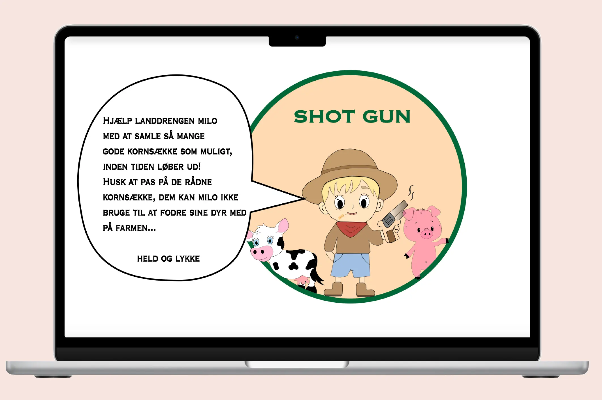

Grundlæggende animation
Tema
Tema 4 på første semester omhandlede animationer. Jeg blev stillet til opgave at designe og kode mit eget spil, med fokus på at opbygge spillet fra brunden. Jeg ideudviklede og designede derfor mine spilleelementer i Adobe illustrator, som har været med til at give mig en dybere forståelse for brugen af illustator.
Derudover blev jeg introduceret til programmeringssproget javascript. Jeg har omsat mine idéer til et spillekoncept gennem aktivitetsdiagrammer, state machines, moodboards og udarbejdet visuelle elementer i Illustrator.
Læring
Ud fra dette projekt har jeg lært at omdanne mine visuelle idéer, til et spillekoncept gennem aktivitetsdiagrammer, state machines og moodboards. Derudover har jeg lært at udarbejdet visuelle elementer i Illustrator, og implementere dem i mit spil.
Jeg har anvendt JavaScript og CSS-animationer i implementeringen af mine elementer, hvilket har givet mig en dybere forståelse og læring for, hvordan de anvendes og fungerer i praksis.
Proces & løsning
Jeg begyndte opgaven med at læse opgaveformuleringen for at skabe et overblik. Opgaven gik ud på at opbygge et spil ved hjælp af CSS-animationer og programmeringssproget JavaScript. Beskrivelsen indeholdt en række specifikke krav: spillet skulle fungere både i mobil og desktop, spillelementerne skulle kunne klikkes på, og animationerne måtte kun afspilles i én retning. Derudover skulle spillet indeholde tre centrale elementer: point, liv og tid. Til opgaven var der på forhånd oprettet HTML-struktur til vores eksterne sider, hvor vi skulle dokumentere hele vores udviklingsproces.
Klik på skærmen for at åbene min opgave
Jeg udarbejdede opgaven i overensstemmelse med opgavespecifikationerne, jeg startede derfor med at tegne og skitsere mine spilelementer til spillet 'Shot Gun'. I denne fase fik jeg kendskab til Adobe Illustrator og SVG-formater, hvilket gav mig nye visuelle værktøjer til udviklingen. Derudover anvende jeg både aktivitetsdiagrammer og statemachine-diagrammer, som hjalp mig med at skabe overblik over spillets struktur. Ved implementeringen af mine elementer benyttede jeg CSS-animationer og JavaScript til at færdiggøre spillets funktionalitet.